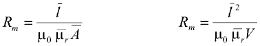

Modelica.Magnetic.FluxTubes.UsersGuide
Modelica.Magnetic.FluxTubes.UsersGuide
Modelica.Magnetic.FluxTubes.UsersGuide
Modelica.Magnetic.FluxTubes.UsersGuide
This library contains components for modelling of electromagnetic devices with lumped magnetic networks. Those models are suited for both rough design of the magnetic subsystem of a device as well as for efficient dynamic simulation at system level together with neighbouring subsystems. At present, components and examples for modelling of translatory electromagnetic and electrodynamic actuators are provided. If needed, these components can be adapted to network modelling of rotational electrical machines.
This user's guide gives a short introduction to the underlying concept of magnetic flux tubes, summarizes the calculation of magnetic reluctance forces from lumped magnetic network models and lists reference literature.
Examples illustrates the usage of magnetic network models with simple models from different fields of application.
Extends from Modelica.Icons.Information (Icon for general information packages).
| Name | Description |
|---|---|
| Flux tube concept | |
| Reluctance forces | |
| Literature | |
| Contact | Contact |
Modelica.Magnetic.FluxTubes.UsersGuide.FluxTubeConceptFollowing below, the concept of magnetic flux tubes is outlined in short. For a detailed description of flux tube elements, please have a look at the listed literature. Magnetic flux tubes enable for modeling of magnetic fields with lumped networks. The figure below and the following equations illustrate the transition from the original magnetic field quantities described by Maxwell's equations to network elements with a flow variable and an across variable:

For a region with an approximately homogeneous distribution of the magnetic field strength H and the magnetic flux density B through cross sectional area A at each length coordinate s (A perpendicular to the direction of the magnetic field lines), a magnetic reluctance Rm can be defined:

With the definition of the magnetic potential difference Vm as an across variable and the magnetic flux Φ as flow variable, a reluctance element Rm can be defined similar to resistive network elements in other physical domains. Using Maxwell's constitutive equation

the general formula for the calculation of a magnetic reluctance Rm from its geometric and material properties is:

For a prismatic or cylindrical volume of length l and cross sectional area A with the magnetic flux entering and leaving the region through its end planes, the above equation simplifies to:

Similar equations can be derived for other geometries. In cases where a direct integration is not possible, the reluctance can be calculated on base of average length, average cross sectional area and volume V respectively:

Network elements for sources of a magnetic potential difference or magnetomotive force, i.e., coils or permanent magnets can be formulated as well. The resulting magnetic network models of actuators reflect the main dimensions of these devices as well as the normally nonlinear characteristics of their magnetically active materials.
Extends from Modelica.Icons.Information (Icon for general information packages).
Modelica.Magnetic.FluxTubes.UsersGuide.ReluctanceForceCalculationGenerally, the thrust F developed by a translatory electro-magneto-mechanical actuator (similar for the rotational case with torque and angular position) is equal to the change of magnetic co-energy Wm* with armature position x according to

(Ψ flux linkage, i actuator current). In lumped magnetic network models, the above equation simplifies to

where nlinear is the number of flux tube elements with constant relative permeability that change its permeance Gm i with armature position (index i), Vm i the magnetic voltage across each respective flux tube and dGm i/dx the derivative of the respective permeances with respect to armature position. Transition from the general formula based on magnetic co-energy to the latter one is outlined in [Ka08] for the reciprocal of the permeance, i.e., for the magnetic reluctance Rm. Note that

with Φi being the magnetic flux through each respective flux tube element.
Flux tube elements with non-linear material characteristics μr(B) in magnetic network models do not restrict the usability of the above equation. However, it is required that these nonlinear flux tube elements do not change its shape with armature motion (e.g., portion of a solenoid plunger where the magnetic flux passes through in axial direction). This limitation is not a strong one, since the permeance of nonlinear, but highly permeable ferromagnetic flux tube elements and its change with armature position compared to that of air gap flux tubes can be neglected in most cases. Because of this constraint, the dimensions of possibly nonlinear flux tube elements in sub-package Shapes.FixedShape are fixed, whereas the dimension in direction of motion of the linear flux tube elements in sub-package Shapes.Force can vary during simulation. For the flux tubes defined in this package with their rather simple shapes, the derivative dGm/dx is given analytically. For more complex shapes and variations of dimensions with armature motion, it must be provided analytically during model development, preferably by extending the partial model Interfaces.PartialForce.
The sub-package Shapes.Leakage contains flux tube shapes typical for leakage flux around prismatic or cylindrical poles. Since the permeance of these flux tubes does not change with armature position, they do not contribute to a reluctance actuator's thrust.
Extends from Modelica.Icons.Information (Icon for general information packages).
 Modelica.Magnetic.FluxTubes.UsersGuide.Literature
Modelica.Magnetic.FluxTubes.UsersGuide.LiteratureExtends from Modelica.Icons.References (Icon for external references).
 Modelica.Magnetic.FluxTubes.UsersGuide.Contact
Modelica.Magnetic.FluxTubes.UsersGuide.ContactAcknowledgements:
Extends from Modelica.Icons.Contact (Icon for contact information).
Automatically generated Fri Oct 02 11:08:14 2015.